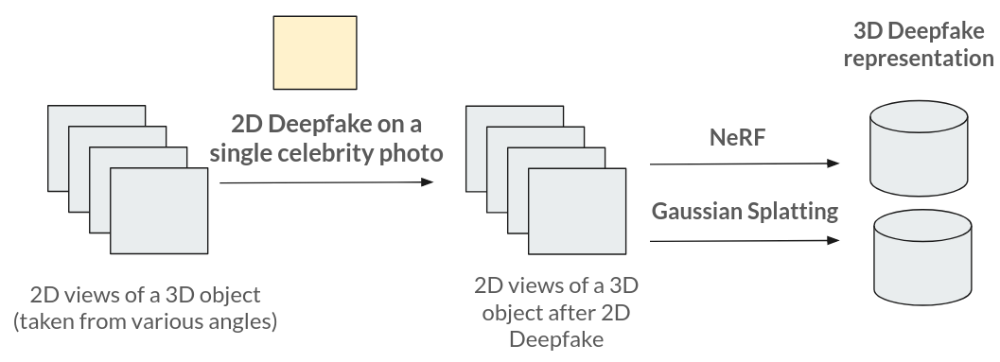
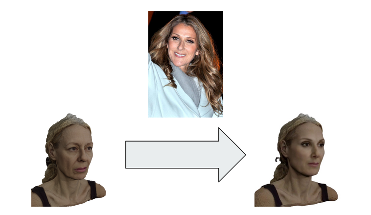
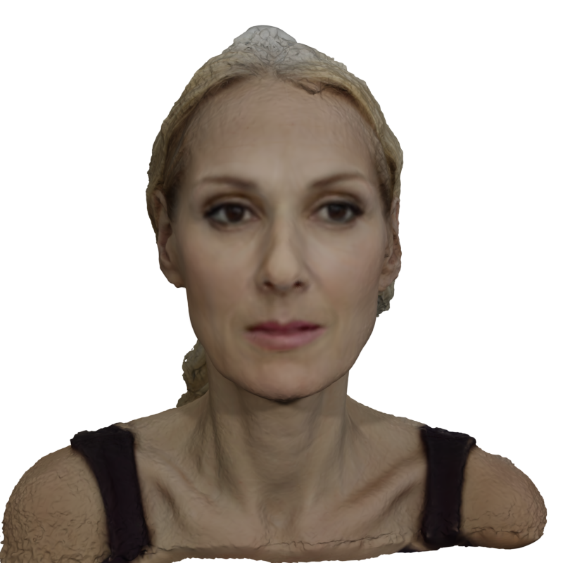
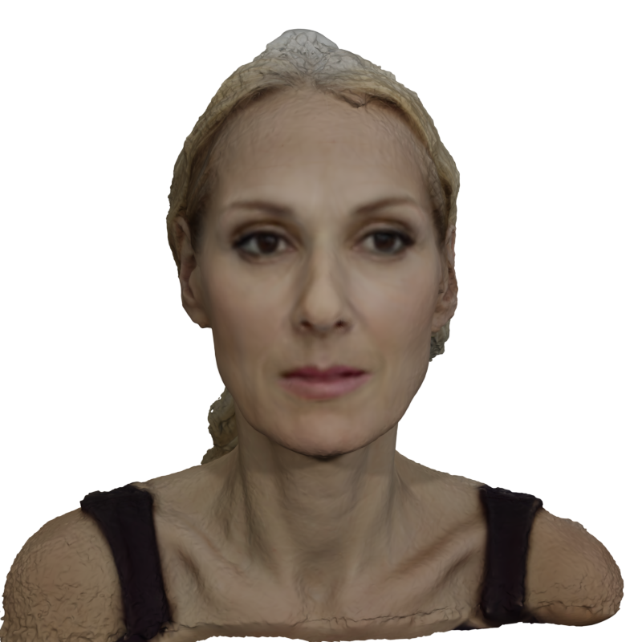
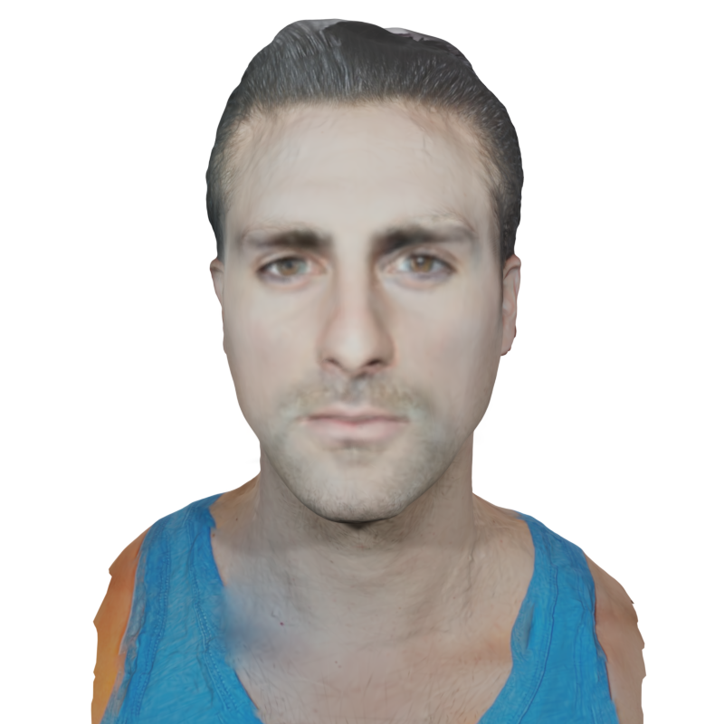
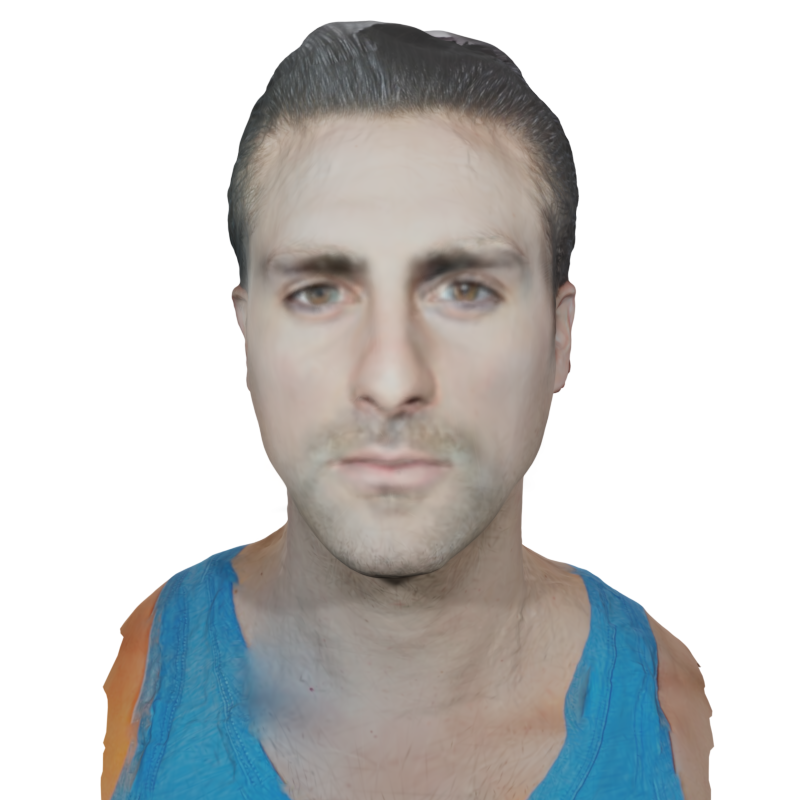
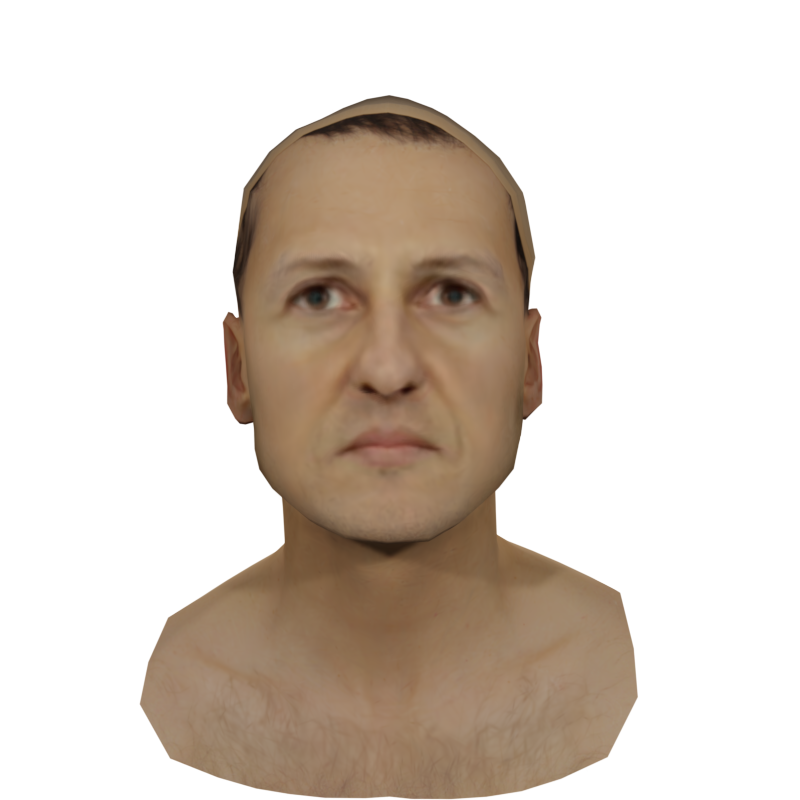
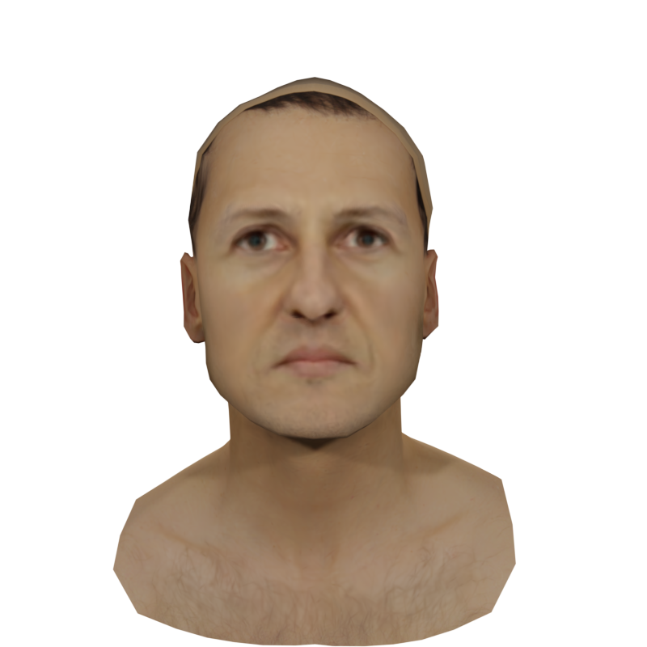

Numerous emerging deep-learning techniques have had a substantial impact on computer graphics. Among the most promising
breakthroughs are the rise of Neural Radiance Fields (NeRFs) and Gaussian Splatting (GS). NeRFs encode the object’s shape and color
in neural network weights using a handful of images with known camera positions to generate novel views. In contrast, GS provides
accelerated training and inference without a decrease in rendering quality by encoding the object’s characteristics in a collection
of Gaussian distributions. These two techniques have found many use cases in spatial computing and other domains. On the other
hand, the emergence of deepfake methods has sparked considerable controversy. Deepfakes refers to artificial intelligence-generated
videos that closely mimic authentic footage. Using generative models, they can modify facial features, enabling the creation of altered
identities or expressions that exhibit a remarkably realistic appearance to a real person. Despite these controversies, deepfake can
offer a next-generation solution for avatar creation and gaming when of desirable quality. To that end, we show how to combine
all these emerging technologies to obtain a more plausible outcome. Our ImplicitDeepfake uses the classical deepfake algorithm to
modify all training images separately and then train NeRF and GS on modified faces. Such simple strategies can produce plausible 3D
deepfake-based avatars.
In short, we present the first model that produces a 3D deepfake.

ImplicitDeepfake idea diagram
The idea of our pipeline is symbolically represented in the picture above, although its understanding requires some prior knowledge.
Our pipeline leverages recent advancements in 3D rendering using machine learning models that can generate a complete 3D representation of an object from a set of 2D pictures, provided with precise camera positions. These models, such as 3D Gaussian Splatting for Real-Time Radiance Field Rendering and NeRF (Neural Radiance Fields), allow us to obtain novel views from any angle once trained.
The process begins by creating a training set of photos of an anonymous 3D model, along with the associated camera angles. We then apply a classical 2D deepfake model to each photo, producing a dataset compatible with 3D representation techniques. Our experiments show that both Gaussian Splatting and NeRF can create a plausible 3D representation from this dataset.
This approach is one-shot, requiring only a single set of photos of the person to be mimicked. The initial 2D pictures of the 3D model do not need to resemble the target person, although some resemblance can enhance the results.
Example

2D image transformation
Above we present an example of a 2D image transformation. On the left there is a photo taken using blender software
of a 3D anonymous model (by anonymous model we mean that the model is a matter of choice).
Above the arrow there is a picture from the CelebA dataset of Ms Céline Dion. On the right
we present the result of applying GHOST 2D deepfake on anonymous and
CelebA photo labelled as target and source respectively.
We process all the photos in the similar manner. Afterwards, we treat them as an input to a 3D representation model
to achieve the results presented below.
 


 

 
